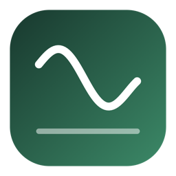
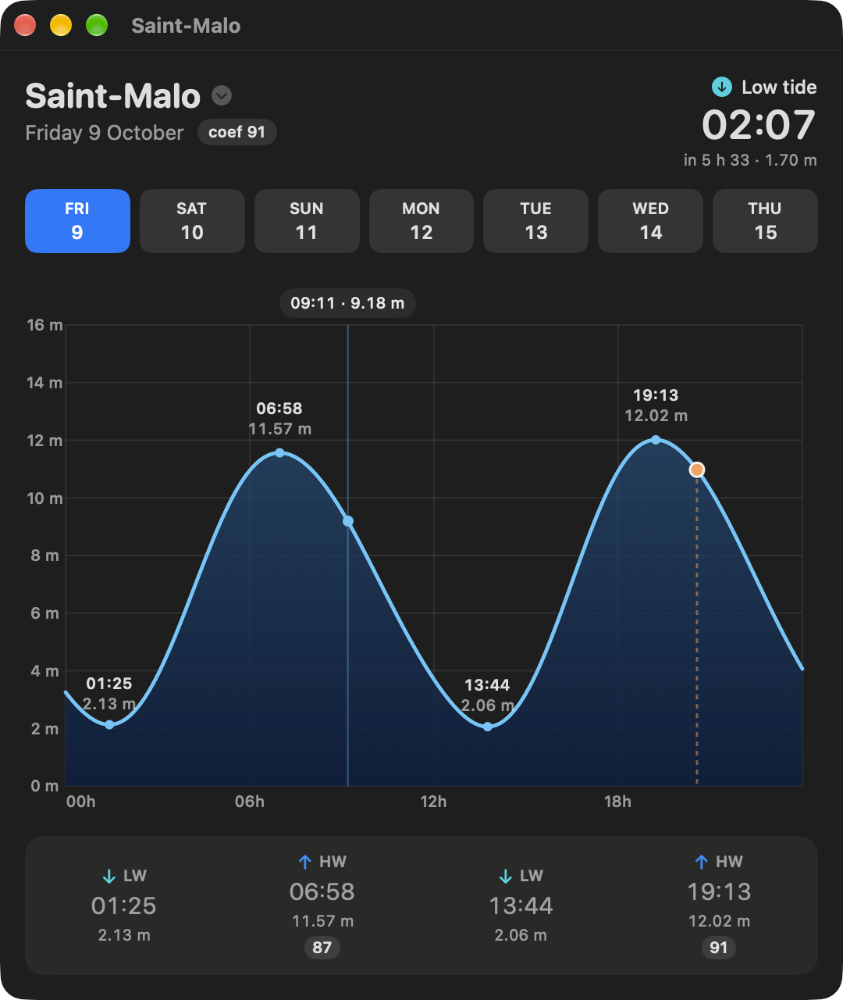
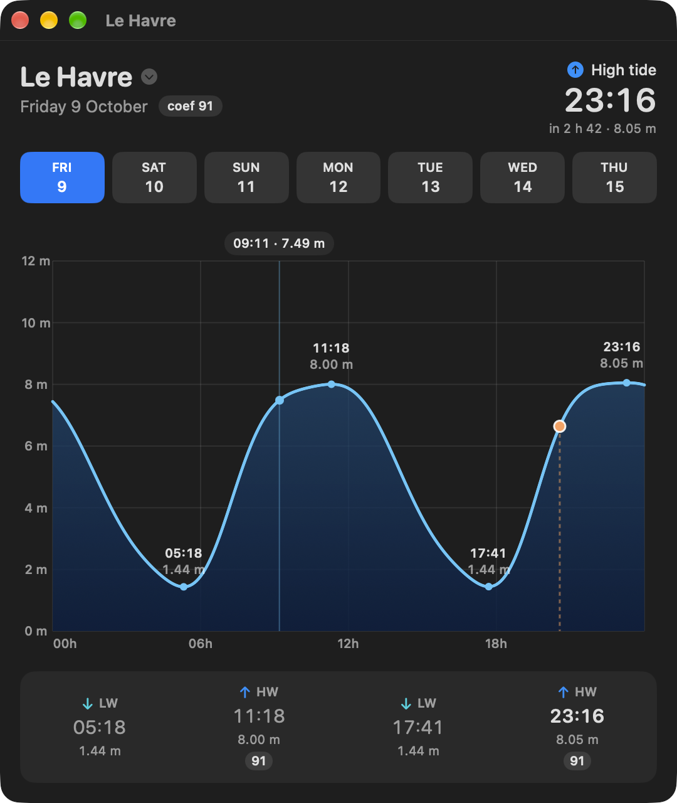
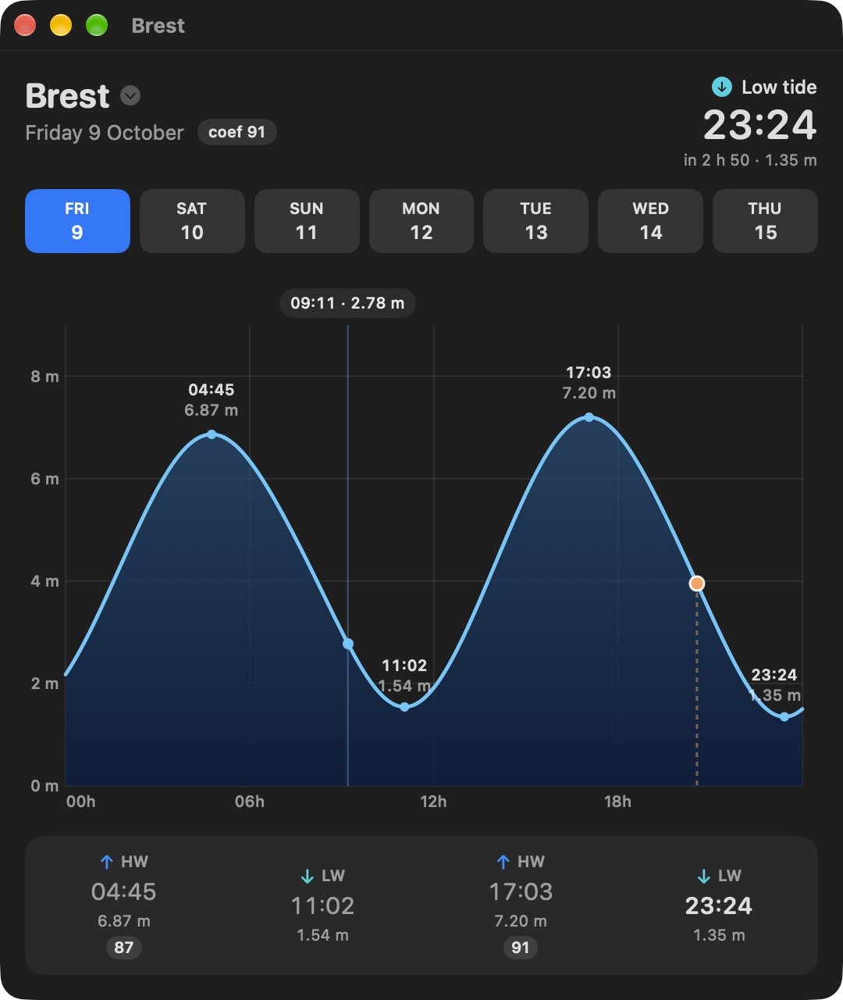

Where the sea lingers
At Le Havre the high water stands for hours. A plain sine would miss it; the shallow-water constituents the analysis adds reproduce it.

The tides of 13 French ports, from Dunkirk to the Basque coast: the day’s curve, high and low waters, the coefficient, and a widget for the desktop. Computed on your Mac from public tide-gauge observations.
Free and open source (MIT) · macOS 26.5 or later · signed and notarized · English and French

Harmonic constants fitted by least squares on two years of REFMAR observations — 33 constituents, 43 where shallow water distorts the tide. No SHOM prediction or constant is reused.
Dunkirk, Boulogne, Dieppe, Le Havre, Cherbourg, Saint-Malo, Roscoff, Le Conquet, Brest, Concarneau, Saint-Nazaire, La Rochelle, Boucau-Bayonne.
Small or medium, one port each, on the desktop or in Notification Center: the next tide, its height, the curve.
No account, no network: the constants ship with the app, the prediction runs locally.
marnage analyses raw observations, validates on held-out data and prints a day’s tides.
Zero dependencies — not even LAPACK. Open source, MIT.
At Le Havre the high water stands for hours. A plain sine would miss it; the shallow-water constituents the analysis adds reproduce it.

Brest, where the tide coefficient is defined. Pick any of the next seven days from the strip; hover the curve to read the height at any minute.

Open the .dmg, drag Marnage onto Applications. It is signed with a Developer ID and notarized by Apple: it opens with a double click.